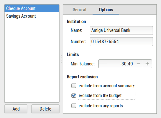
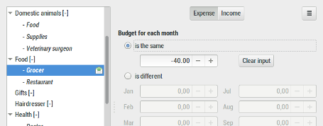
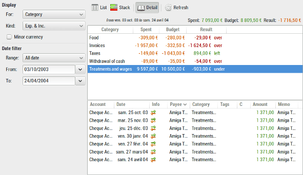

The Budget feature allows you to monitor your spending by category and subcategory compared to a budget preset.
By default, all accounts are included into the budget.
Open the Manage Accounts dialog from either the main window-menu: Manage / Accounts, or from the Manage Accounts icon on the tool-bar.
To exclude an account in the budget tick the 'exclude from the budget' option for each account on that you would not like to include in the budget.

See Manage Accounts for more details.
Open the budget dialog from either the main window-menu: Manage / Budget, or from the Budget icon on the tool-bar
Enter a budget amount against some category that you want to include in the budget. If the amount for a category is 0.00 it will not be showed in the budget until you tick the 'Force monitoring this category' check-box at the bottom of the budget dialog.
For example, select the category 'Cash Withdrawal' and enter -50.00 in the 'Budget for each month' text box to allow spending up to 50.00 in the category 'Cash Withdrawal' each month.

See budget dialog for more details.
Open the budget report window from either the main-window-menu: Reports / Budget, or from the budget report icon on the tool-bar.
The Result column shows the difference between the amount spent and the amount budgeted.

See the budget report for more details.